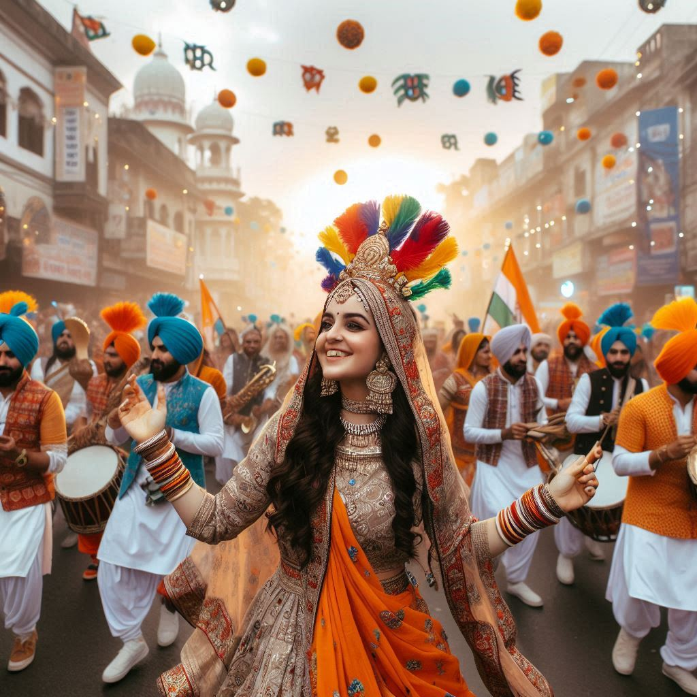
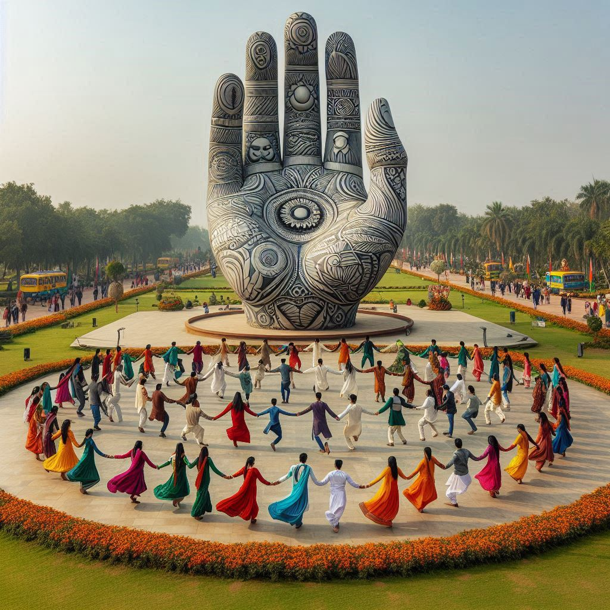

Chandigarh, as a modern city with a unique blend of cultures, has traditions that reflect the diverse
heritage of its residents. The traditions here are influenced by the surrounding states of Punjab and
Haryana, as well as the migration of people from different parts of India. Here are some key aspects of the
traditions of Chandigarh:
1. Festivals
- Lohri: Celebrated predominantly in Punjab, Lohri marks the end of winter and the arrival of
longer days. People celebrate with bonfires, singing folk songs, and dancing the Bhangra and Gidda.
- Baisakhi: This harvest festival is celebrated with great enthusiasm. It marks the Punjabi New
Year and is a time for joyous gatherings, traditional dances, and community feasts.
- Diwali: The festival of lights is celebrated by all communities, symbolizing the victory of
light over darkness. Homes are decorated with diyas (oil lamps) and rangoli (colorful patterns made
with powders).
- Holi: The festival of colors is celebrated with much fervor, with people throwing colored
powders, dancing, and sharing sweets.
2. Folk Music and Dance
- Bhangra and Gidda: These are traditional folk dances of Punjab, characterized by energetic
movements and vibrant music. Bhangra is typically performed by men, while Gidda is danced by women.
Both forms are integral to festivals and celebrations.
- Punjabi Folk Songs: Music plays a vital role in Chandigarh’s traditions. Folk songs are sung
during various occasions, and traditional instruments like the dhol (drum) and tumbi (string
instrument) accompany the performances.
3. Culinary Traditions
- The food culture in Chandigarh is deeply rooted in Punjabi cuisine, known for its rich flavors and
hearty dishes. Traditional meals often include items like butter chicken, dal makhani,
sarson da saag, and makki di roti.
- Street Food: The city’s vibrant street food scene is an essential part of its culinary
tradition, with popular items like chole bhature, golgappas, and paneer tikka
found in various markets and roadside stalls.


4. Handicrafts and Arts
- Chandigarh hosts various traditional crafts, including Phulkari, a form of embroidery that
uses vibrant colors and floral patterns, typically found on shawls and dupattas.
- Pottery and Terracotta: Local artisans engage in pottery, creating functional and decorative
items that reflect the region's cultural heritage.
5. Rituals and Customs
- Weddings: Traditional Punjabi weddings in Chandigarh are elaborate and colorful, involving
several rituals like Sangeet (musical night), Mehendi (henna application), and the
main wedding ceremony, which is often a grand affair with lots of festivities.
- Religious Practices: The residents of Chandigarh follow diverse religious beliefs, including
Sikhism, Hinduism, and Islam, leading to a rich tapestry of religious traditions and customs. The
Gurudwaras (Sikh temples), Hindu temples, and mosques reflect this diversity
and are sites for community gatherings and celebrations.
6. Community Life
- Chandigarh has a strong sense of community, where traditions of hospitality, mutual respect, and
cooperation among residents are deeply ingrained. Community events and gatherings play a crucial
role in maintaining these traditions.
Conclusion
- The traditions of Chandigarh are a reflection of its rich cultural diversity, influenced by the
neighboring states of Punjab and Haryana and the convergence of various communities. Festivals,
music, dance, cuisine, and crafts all contribute to the city’s vibrant cultural identity, making it
a unique blend of modernity and tradition. The warm hospitality of its residents and the celebration
of cultural heritage make Chandigarh a city that cherishes and upholds its traditions.